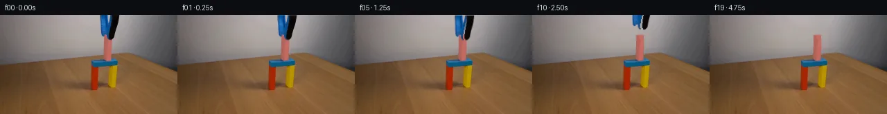
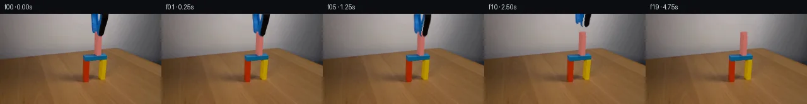
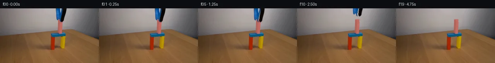
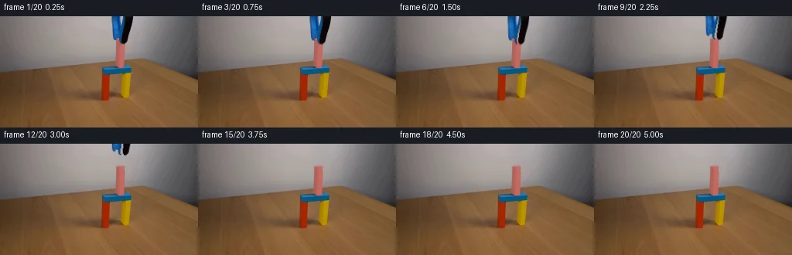
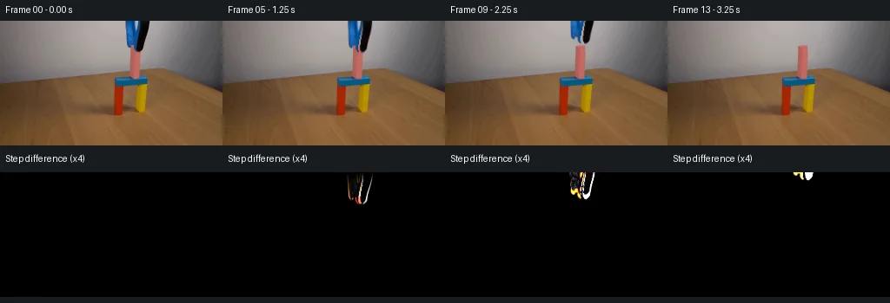

V0 · 初版
2026-11-05T18:23:52.547594+00:00 · RGB 69054fd27f61
![]()
Observable Generation Trace
把最终像素视频、Harness 冻结的每轮候选、真实工具事件和 Agent 自述放在同一页。可观测证据与模型自述分开标记，避免把“模型说它检查过”误当成真实工具调用。
![首帧]()
Static locked-off single-shot with fixed frame throughout filmed with constant framerate in real-time. The scene shows a realistic scientific demonstration. The scene only contains the described setup and actions. A pink block is carefully placed atop a simple structure of colorful blocks that resembles a gate by a blue-black grabber tool that then retracts upward.
首帧显示在左侧播放器初始画面。Track 权限、隔离和 tensor 一致性来自 run manifest，而不是 METHOD.md。
默认勾选初版和最终版；可选其他版本一起同步播放。仅检查图更新的连续重复快照已合并，回退旧视频仍保留为一次修订。
Observable events
来源：events.jsonl + run manifest
此 Track 禁止读取输出图片。逐轮预览由外部 Harness 自动冻结，只用于事后审计，生成 Agent 当时看不到这些页面。
Frozen candidates
每张图来自该 round 的真实 00 / 01 / 05 / 10 / 19 帧

pixels 99bce1c76e0bf7f2 · code ba328d17580eba49
--- previous/generate.py
+++ current/generate.py
@@ -0,0 +1,180 @@
+"""Local source-pixel layer animation. No external renderer or learned model."""
+from pathlib import Path
+import json
+import numpy as np
+from PIL import Image, ImageDraw
+import cv2
+from scipy.ndimage import distance_transform_edt, binary_dilation
+from scipy.sparse import lil_matrix
+from scipy.sparse.linalg import spsolve
+from artifact_io import save
+
+ROOT = Path(__file__).resolve().parent
+H, W = 144, 256
+SOURCE = np.asarray(Image.open(ROOT / 'first_frame.png').convert('RGB'))
+src = SOURCE.astype(np.float64)
+yy, xx = np.mgrid[:H, :W]
+
+
+def polygon(points, scale=8):
+ canvas = Image.new('L', (W*scale, H*scale))
+ ImageDraw.Draw(canvas).polygon([(round(x*scale),round(y*scale)) for x,y in points],fill=255)
+ return np.asarray(canvas.resize((W,H),Image.Resampling.LANCZOS)).astype(float)/255
+
+
+def harmonic_fill(image, mask):
+ # Neumann boundary on top of image; observed pixels provide other boundaries.
+ coords = np.argwhere(mask)
+ lookup = np.full((H,W),-1,int)
+ lookup[mask] = np.arange(len(coords))
+ matrix = lil_matrix((len(coords),len(coords)),dtype=np.float64)
+ rhs = np.zeros((len(coords),3),float)
+ for i,(y,x) in enumerate(coords):
+ neighbors = [(a,b) for a,b in [(y-1,x),(y+1,x),(y,x-1),(y,x+1)] if 0<=a<H and 0<=b<W]
+ matrix[i,i] = len(neighbors)
+ for a,b in neighbors:
+ if mask[a,b]: matrix[i,lookup[a,b]] = -1
+ else: rhs[i] += image[a,b]
+ result=image.copy()
+ result[mask]=spsolve(matrix.tocsr(),rhs)
+ return result
+
+
+# Color and position delimit foreground. Only this source-derived region is repaired.
+wall_estimate=np.zeros_like(src)
+for y in range(38):
+ left=np.median(src[y,140:144],axis=0)
+ right=np.median(src[y,174:178],axis=0)
+ for x in range(141,178):
+ wall_estimate[y,x]=left+(right-left)*(x-142)/34
+blue=(src[:,:,2]-src[:,:,0]>25)&(src[:,:,2]-src[:,:,1]>23)
+dark=(src.max(axis=2)<80)
+tool_zone=(yy<36)&(xx>=143)&(xx<=174)
+core=tool_zone&(blue|dark)
+# One-pixel feather includes partially covered silhouette pixels.
+candidate=binary_dilation(core,iterations=1)&(yy<=36)&(xx>=143)&(xx<=174)
+pink_zone=(xx>=149)&(xx<=162)&(yy>=27)&(yy<=66)
+pink_color=(src[:,:,0]-src[:,:,1]>33)&(src[:,:,0]-src[:,:,2]>30)
+repair= candidate | (pink_zone & pink_color)
+repair=binary_dilation(repair,iterations=1)&(xx>=142)&(xx<=175)&(yy<=66)
+# Source blue lintel always remains on top of the placed block.
+gate=(yy>=63)&(yy<=76)&(xx>=130)&(xx<=171)&blue
+repair[gate]=False
+background=cv2.inpaint(SOURCE,repair.astype(np.uint8)*255,3,cv2.INPAINT_TELEA).astype(float)
+wallmask=repair&(yy<54)
+background=harmonic_fill(background,wallmask)
+background[~repair]=src[~repair]
+
+# Block geometry: exposed faces reconstructed only where the gripper hides them.
+block_alpha=polygon([(149.7,28.7),(155.5,27.6),(161.0,28.1),(161.0,64.8),(154.8,66.2),(149.7,66.2)])
+block_rgb=np.zeros_like(src)
+profile=np.median(src[42:54,150:162],axis=0)
+for y in range(26,68):
+ for x in range(149,163):
+ block_rgb[y,x]=profile[np.clip(x-150,0,11)]
+# Tiny brighter upper face with a softly shaded edge; same salmon material.
+top_alpha=polygon([(149.7,28.7),(155.5,27.6),(161.0,28.1),(154.7,29.9)])
+block_rgb=block_rgb*(1-top_alpha[:,:,None])+np.array([193,118,113])*top_alpha[:,:,None]
+# Preserve measured source texture on every clearly exposed pixel.
+visible=pink_zone&pink_color&(~candidate)
+visible|=(pink_zone&(yy>=37))
+# Matting the original visible edge recovers color against the repaired background.
+valid=visible&(block_alpha>0.03)
+block_rgb[valid]=(src[valid]-background[valid]*(1-block_alpha[valid,None]))/block_alpha[valid,None]
+block_rgb=np.clip(block_rgb,0,255)
+block_pre=block_rgb*block_alpha[:,:,None]
+underlay=background*(1-block_alpha[:,:,None])+block_pre
+
… diff truncated; 93 more lines …
pixels 037b9aec145340b7 · code ee3419a3b1d380e0
--- previous/generate.py
+++ current/generate.py
@@ -66,20 +66,34 @@
background[~repair]=src[~repair]
# Block geometry: exposed faces reconstructed only where the gripper hides them.
-block_alpha=polygon([(149.7,28.7),(155.5,27.6),(161.0,28.1),(161.0,64.8),(154.8,66.2),(149.7,66.2)])
+block_alpha=polygon([(150.2,28.7),(155.5,27.6),(161.4,28.1),(161.4,37.5),(150.2,37.5)])
block_rgb=np.zeros_like(src)
profile=np.median(src[42:54,150:162],axis=0)
for y in range(26,68):
for x in range(149,163):
block_rgb[y,x]=profile[np.clip(x-150,0,11)]
# Tiny brighter upper face with a softly shaded edge; same salmon material.
-top_alpha=polygon([(149.7,28.7),(155.5,27.6),(161.0,28.1),(154.7,29.9)])
+top_alpha=polygon([(150.2,28.7),(155.5,27.6),(161.4,28.1),(154.7,29.9)])
block_rgb=block_rgb*(1-top_alpha[:,:,None])+np.array([193,118,113])*top_alpha[:,:,None]
-# Preserve measured source texture on every clearly exposed pixel.
+# The exposed lower block silhouette is measured from source colors, rather than
+# forcing its antialiased edge and contact footprint to an ideal polygon.
+pinkcore=pink_zone&(yy>=37)&(src[:,:,0]-src[:,:,1]>60)&(src[:,:,0]-src[:,:,2]>60)
+pinkcandidate=binary_dilation(pinkcore,iterations=1)&(yy>=37)&(yy<=67)&(xx>=149)&(xx<=162)
+_,pi=distance_transform_edt(~pinkcore,return_indices=True)
+pinknearest=src[pi[0],pi[1]]
+pv=pinknearest-background
+pa=np.clip(np.sum((src-background)*pv,axis=2)/np.maximum(np.sum(pv*pv,axis=2),1),0,1)
+pa[~pinkcandidate]=0
+pa[pinkcore]=1
+pa[pa<.025]=0
+block_alpha[yy>=37]=pa[yy>=37]
+# Keep all repaired pixels outside the actual silhouettes equal to the source.
+# They were needed as interpolation context, but are stationary observed surfaces.
+used=candidate|(block_alpha>.015)
+background[~used]=src[~used]
visible=pink_zone&pink_color&(~candidate)
-visible|=(pink_zone&(yy>=37))
-# Matting the original visible edge recovers color against the repaired background.
-valid=visible&(block_alpha>0.03)
+visible|=pinkcandidate
+valid=visible&(block_alpha>.025)
block_rgb[valid]=(src[valid]-background[valid]*(1-block_alpha[valid,None]))/block_alpha[valid,None]
block_rgb=np.clip(block_rgb,0,255)
block_pre=block_rgb*block_alpha[:,:,None]
@@ -120,7 +134,7 @@
# A slow seating, grip release, then smooth withdrawal beyond the upper image boundary.
seat=[0,.18,.38,.45]+[.45]*16
release=[0,0,0,0,.28,.70,1,1,1,1,1,1,1,1,1,1,1,1,1,1]
-rise=[0,0,0,0,0,0,1.0,3.0,6.0,10.2,15.4,21.4,28.0,36.6,43.0,43.0,43.0,43.0,43.0,43.0]
+rise=[0,0,0,0,0,0,1.0,3.0,6.0,10.2,15.4,21.4,28.0,37.8,43.0,43.0,43.0,43.0,43.0,43.0]
frames=[]
metadata=[]
for t in range(20):
@@ -175,6 +189,6 @@
changes=np.any(delta>0,axis=2)
coords=np.argwhere(changes)
transitions.append({'to_frame':t,'changed_pixels':int(changes.sum()),'mean_absolute_rgb_delta':round(float(delta.mean()),6),'max_channel_delta':int(delta.max()),'changed_bbox_yx':None if len(coords)==0 else [coords.min(axis=0).tolist(),coords.max(axis=0).tolist()]})
-report={'frame_count':20,'size':[256,144],'fps':4,'duration_s':5,'tensor_shape':list(packed.shape),'tensor_dtype':str(packed.dtype),'frame00_exact':True,'all_pngs_match_tensor':True,'stationary_regions_exact':True,'final_hold_exact':True,'source_recomposition_mean_error_in_tool':float(np.abs(over(underlay,premult,alpha)-src)[candidate].mean()),'motion':metadata,'transitions':transitions,'review':'Local code and numeric checks only; output images were not opened or visually reviewed.'}
+report={'frame_count':20,'size':[256,144],'fps':4,'duration_s':5,'tensor_shape':list(packed.shape),'tensor_dtype':str(packed.dtype),'frame00_exact':True,'all_pngs_match_tensor':True,'stationary_regions_exact':True,'final_hold_exact':True,'source_recomposition_mean_error_in_block':float(np.abs(underlay-src)[pinkcandidate].mean()),'source_recomposition_mean_error_in_tool':float(np.abs(over(underlay,premult,alpha)-src)[candidate].mean()),'motion':metadata,'transitions':transitions,'review':'Local code and numeric checks only; output images were not opened or visually reviewed.'}
(ROOT/'validation.json').write_text(json.dumps(report,indent=2))
print(json.dumps(report,indent=2))
pixels 2f58172ac693a5c3 · code 25c530b8d7159f77
--- previous/generate.py
+++ current/generate.py
@@ -120,11 +120,12 @@
def warp(array, dx, dy, opening=0):
+ # The top boundary extends the entering tool during its tiny downward seating.
# Jaws separate progressively toward their lower tips, keeping upper attachment fixed.
dest_y=yy.astype(np.float32)-dy
shift=dx+opening*np.clip(dest_y/35,0,1)
mapx=(xx-shift).astype(np.float32)
- return cv2.remap(array.astype(np.float32),mapx,dest_y,cv2.INTER_LINEAR,borderMode=cv2.BORDER_CONSTANT,borderValue=0)
+ return cv2.remap(array.astype(np.float32),mapx,dest_y,cv2.INTER_LINEAR,borderMode=cv2.BORDER_REPLICATE)
def over(canvas, pre, a):
@@ -179,7 +180,10 @@
image=np.asarray(Image.open(ROOT/'frames'/f'{t:02d}.png').convert('RGB')).astype(np.uint32)
assert np.array_equal((image[:,:,0]<<16)|(image[:,:,1]<<8)|image[:,:,2],packed[:,:,t])
assert np.array_equal(frames[0],SOURCE)
-assert np.array_equal(frames[14:],np.repeat(frames[14:15],6,axis=0))
+assert np.array_equal(frames[13:],np.repeat(frames[13:14],7,axis=0))
+assert all(m['tool_alpha_area']==0 for m in metadata[13:])
+assert all(metadata[t+1]['tool_alpha_area']<=metadata[t]['tool_alpha_area']+.001 for t in range(6,19))
+assert np.array_equal(frames[3:,38:67],np.repeat(frames[3:4,38:67],17,axis=0))
# Verify all stationary supports, foreground wood and distant background remain exact.
stationary=(xx<141)|(xx>178)|(yy>77)|gate
assert np.array_equal(frames[:,stationary],np.repeat(SOURCE[None,stationary],20,axis=0))pixels 2f58172ac693a5c3 · code 25c530b8d7159f77
No generate.py text change in this frozen round.
Final visual checks
Harness 保存的最终产物


Agent claims
以下文字由生成 Agent 撰写，不等同于工具证据
The supplied initial image is the only visual reference. The frame is 256 by 144 pixels, and shows a locked camera facing a wood tabletop and a gray wall. The tabletop/wall boundary runs from about (0,73) through (172,54) to (255,80). The blue gate lintel occupies approximately x=132–169, y=64–75. A red left support occupies x=132–141, y=75–109, and a yellow right support x=156–168, y=73–106. Existing shadows on the tabletop indicate steady illumination from upper left. These surfaces and supports remain fixed.
A narrow upright salmon-pink block occupies approximately x=149–161 and y=27–66. Its two visible faces have different brightness, and its lower end is already very close to the lintel. A blue and black gripper enters through the upper edge: blue components at x=145–162, y=0–35; a black curved jaw at x=157–173, y=0–35. The gripper partially hides the top of the pink block. Its release must reveal a small continuation of that block and previously occluded gray wall. A large translation of the block would make it penetrate the blue lintel, so placement is represented by less than one pixel of final seating, then a deliberate release and vertical withdrawal. The pink block stays upright and balanced on the supported lintel.
Coordinates are approximate measurements of the input; color checks will refine the silhouettes. No later output will be viewed with image tools. Local array, edge, region, and motion checks will be used instead.
All frames are at 4 fps, each displayed for 0.25 seconds, giving 5 seconds total. No cuts, camera motion, lighting changes, or extra objects.
| Frame | Time start | Planned event |
|---|---|---|
| 00 | 0.00 s | Exact supplied frame; block held immediately above/on lintel. |
| 01 | 0.25 s | Very small downward seating movement, grip maintained. |
| 02 | 0.50 s | Seating completes, less than one pixel total displacement. |
| 03 | 0.75 s | Block rests on lintel, tool steadies. |
| 04 | 1.00 s | Jaws begin to relax outward, block remains seated. |
| 05 | 1.25 s | Grip opens enough to clear the block. |
| 06 | 1.50 s | Tool begins rising slowly; block top becomes visible. |
| 07 | 1.75 s | Tool rises further without touching the block. |
| 08 | 2.00 s | Upward movement accelerates smoothly. |
| 09 | 2.25 s | Lower jaw tips pass above the block top. |
| 10 | 2.50 s | Tool continues vertically toward upper frame edge. |
| 11 | 2.75 s | Most of tool is outside the frame. |
| 12 | 3.00 s | Only a small lower tip remains visible at top edge. |
| 13 | 3.25 s | Tool fully leaves through top edge. |
| 14 | 3.50 s | Static held view of the completed structure. |
| 15 | 3.75 s | Static held view. |
| 16 | 4.00 s | Static held view. |
| 17 | 4.25 s | Static held view. |
| 18 | 4.50 s | Static held view. |
| 19 | 4.75 s | Final completed structure, stable and upright. |
Planned method: local Python pixel compositing with manually measured silhouettes, reconstruction of occluded wall and a small hidden block surface, subpixel layer transforms, and a smooth prescribed release/retraction trajectory. Preserve source pixels for all stationary scene regions. Save the packed uint32 RGB tensor, PNG sequence, inspection and transition sheets, standalone player, generator, and method notes. Check every PNG against the tensor and frame 00 against the source.
This continuation was generated using local Python pixel operations on first_frame.png. The supplied initial image was visually available in the user message. Generated frames and diagnostic sheets were inspected only through local code and numeric checks; they were never opened with an image Read/View tool. No external images, neural models, engines, network resources, or subagents were used.
generate.py separates the blue/black gripper and the pink block into source-derived alpha layers. Color thresholds and local nearest-color matting recover the silhouettes. The lower pink block silhouette and its contact footprint use measured source pixels, preserving the existing edges and face texture. Only the small block surface hidden by the tool is reconstructed with a supersampled polygon, source face colors, and a shaded salmon top face. Occluded gray wall pixels are filled with a local discrete harmonic interpolation; a small covered tabletop region uses OpenCV Telea inpainting. Uncovered stationary surfaces retain their original pixels.
The block seats by 0.45 pixels during the first 0.75 seconds. The tool relaxes its jaws by a small horizontal opening that increases toward the lower jaw tips. It then follows a prescribed smooth upward path, clearing the top of the frame at frame 13, or 3.25 seconds. The blue lintel is composited at its measured surface so the seated block stays supported. The tool is extended at the image's upper boundary during the small seating movement. The last seven frames show the stable completed structure. This is pixel compositing with an analytic movement schedule, not a rigid-body simulation or a newly filmed demonstration.
An initial numeric check found that an idealized bottom block polygon changed the existing contact footprint. The generator was revised to matte that footprint from the source. Source-layer recomposition now differs by less than 0.1 RGB intensity levels on average in the tool region and less than 0.02 in the visible block region, before subpixel movement. A further boundary correction extends the entering tool at the upper edge during seating, preventing a spurious strip of revealed wall.
OBSERVATION.md: measurements and the twenty-frame event plan, written before the generator.generate.py: deterministic local generator and numeric validation; run with python generate.py.pixels.npz: key pixels, uint32 shape (144, 256, 20), with each value packed as 0xRRGGBB.frames/00.png through frames/19.png: twenty RGB images at 256 by 144 pixels.inspection.png: eight sampled frames in a contact sheet.transition_check.png: source, release, withdrawal and completed stages, with amplified adjacent-frame differences.index.html: standalone embedded-data player at 4 fps, displaying each frame for 250 ms; twenty frames make a five-second loop.validation.json: dimensions, tensor checks, movement metadata, and numeric transition statistics.The generator asserts frame 00 is pixel-identical to the input and every saved PNG is identical to its packed tensor slice. It verifies the static supports, distant background and table pixels are unchanged; the seated lower block remains constant from frame 03 onward; gripper pixel area decreases during withdrawal; and the gripper is absent from frame 13 onward. The last seven frames are identical. A separate local check decodes every embedded player delta and compares all twenty reconstructed frames against the same tensor. The output timing is 4 fps and five seconds total. Diagnostic sheets exist for user review, but no visual review of those sheets is claimed.